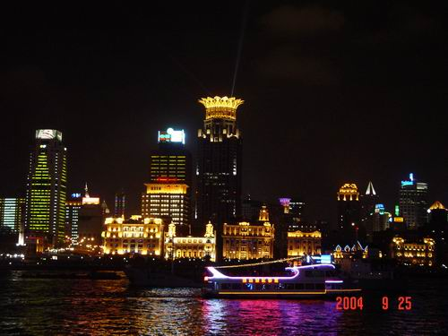

一天半的上海（一） @ Sep 27, 2004
晚上9点前下的火车，回到了生活工作的南京。去上海还是第一次没有买东西回来，但是带回来很多快乐，虽然短暂但真实、不舍。在上海的时候正值2004 中国上海F1大赛，据说这次活动一共15万张票，有7万是卖给了外国观众。最贵的票价好象是RMB3000.00，我对F1从来没有关注过，自然没有愿望去观看这次比赛。
周日返宁的火车车厢里六个商务穿着的日本人坐在我前面，其中一个透过座椅的缝隙明窥暗窥着，不时用手卷着扯下来的领带。下车时他那羞涩而饱含深情得回眸突然令我惆怅不已......人生本就如此，我们都生活在上苍划好的圈内，只有这样我们才知道如何继续我们的生活！
 – 浦东黄浦江边的Starbucks
– 浦东黄浦江边的Starbucks

– 浦东黄浦江边夜景
-相遇...分离...再难相遇...然而无从分离...
上海地铁站内人们顺着自己的路线一步步行走...
原引自《聯合早報》網站
(综合讯)据明报网报道，世界一级方程式赛车(F1)上海站刚结束，有国际赛车传媒界人士认为，上海购买此站的主办权费用过高。
根据颇有影响力的英国《F1商业》杂志最新刊登的数据，上海购买举办权费用每年高达3000万美元，但与上海一样在今年第一次举办F1的巴林却只付出了1800万美元。在亚洲举行的其他两站比赛中，日本铃鹿站的举办权费用只有950万美元，马来西亚雪邦站的费用为1500万美元，都比上海低。
欧美地区各个F1分站赛的举办权费用都只在1000万美元左右，有的分站甚至不需要购买举办权，如摩纳哥站和意大利蒙扎站。
《F1商业》的资深记者卡特勒近日对新华社记者说，如果与其他分站相比，上海购买举办权的费用明显过高，“与欧洲各站比赛相比，上海几乎付出了三倍的费用购买举办权，有点不可思议。”
11 Responses to “一天半的上海（一）”
2004-09-27
chris周末在上海？早知道，就来次上海茶友聚会了，遗憾
2004-09-28
chris你的照片很pp啊,,,不过我困惑谁帮你照相啊,特别是在家里的,是男朋友吗? 不错...向摄影师学习
2004-09-28
在上海时我的照片是女友ANGIE帮我拍的，风景基本上是我自己拍的，至于家里的PP是架着三角架拍的。
不过真的有些受宠若惊...关心我到了连谁为我拍摄都要关心的地步了！
2004-09-28
没有没有，因为我本人比较喜欢拍照，所以自然除了关心model外，要关心摄影师的构图和取景啊。。。。。。所以基于这点，我问这个问题就不奇怪了吧。。。。本来还准备叫你把摄影师的照片也贴上来，原来就是你本人。厉害！
2004-09-28
推荐去色影无忌，国内最好的了。没事情，买本《纽约摄影学院的教材》么，研究研究。其实这么久以来，感触最深的还是摄影是门实践课程，多拍，才能找出感觉的/。
2004-09-28
谢谢carine~~我真的越来越喜欢摄影了。
2004-09-28
女人是从照片的感觉出发，而男人喜欢摄影，多是以专业的角度。其实喜欢就好，很多时候拿出自己满心的片片给他人看，总是说出曝光不足，对焦不准确……一串问题来，只要不以此为生，又何必太在乎那些深奥的专业呢，反映自己的心境就好了——我一直这样认为，哈，阿Q精神
2004-09-28
早上的火车刚回到了杭州，却开始想念在北京的日子。而在北京的时候却总是想着家，无时无刻不抱怨着北京的种种不是。似乎很矛盾啊。。。当在家过完中秋和国庆，回到北京的时候是不是又是依旧呢。
2004-09-29
哈哈,carine,高.......我本来刚想说christina好几张都照虚了...明显没对好焦啊......(在家里的几张)
2004-09-29
是有这样的问题，要是能经过专业培训一下就好了:wink:
2004-09-29
去年一个人就那样坐在江边，从黄昏到黑夜．好熟悉的黄昏和夜色～
Leave A Reply
存档只读，评论已关闭。